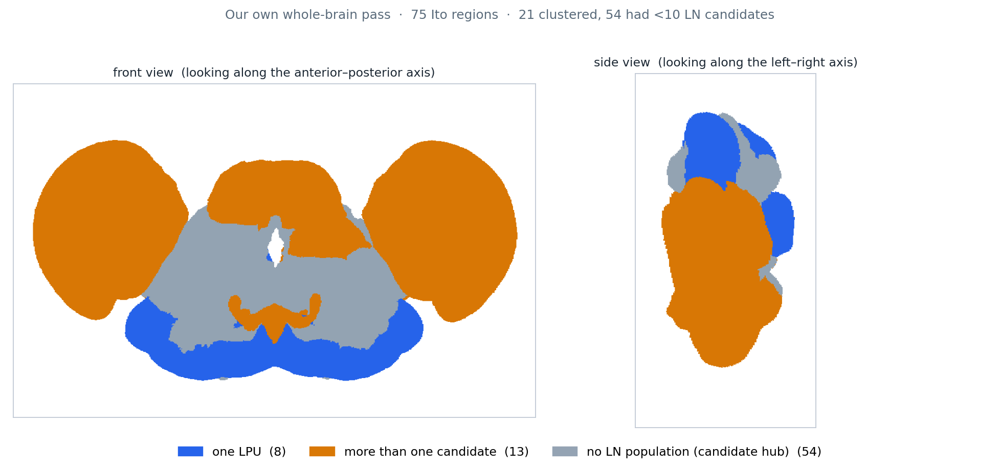
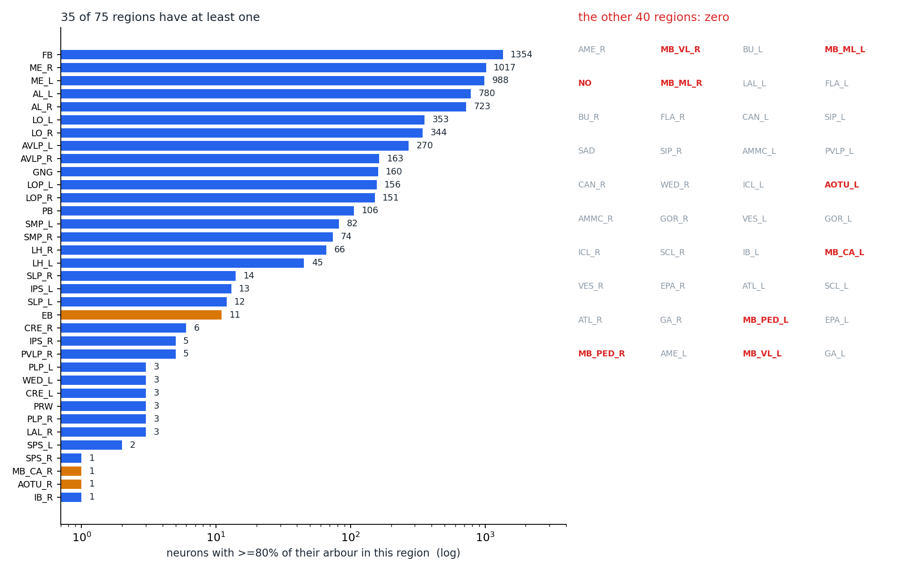
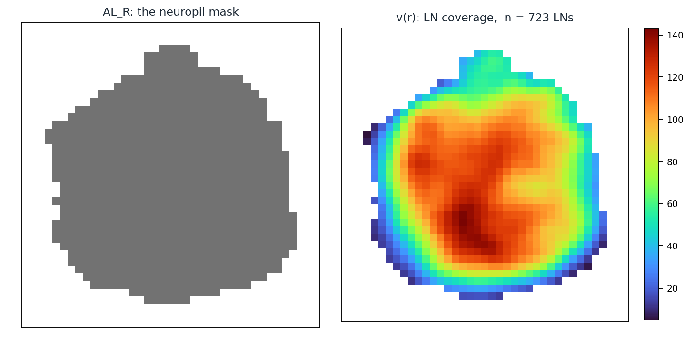
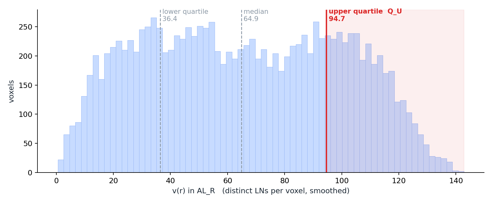
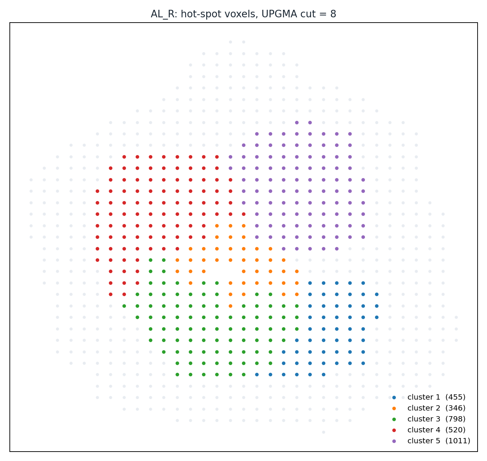
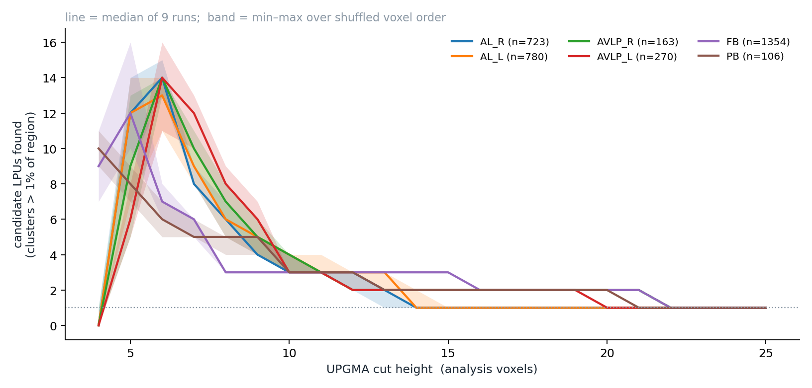

PART 4
14 條指令一口氣交出去——七條照做、三條抓到錯、一條徹底失敗
所以這一頁分兩層：上半是結論（做出什麼、哪幾步成功），只想看結果的人在這裡就能停；下半是逐條的實跑紀錄，含失敗與卡住的地方。
真正有價值的是對不上的地方——那些是知道答案也擋不住的問題，下面會逐一列出。

part4/scripts/c14_run.py 與 c14_figure.py 算出。分區為 Ito 2014／D03，神經元為 D06 的 28,573 顆 FlyCircuit 骨架。但它不能拿去跟論文那張 41 個 LPU 的圖並列——理由在結論三。
| # | 指令 | 結果 | 發生什麼 |
|---|---|---|---|
| 1 | 盤點資料、確認單位 | 抓到問題 | 八項數字全對。但軸向檢查發現兩個座標框的軸序不一樣 |
| 2 | 定 LN 判準 | 全對 | 9,688／6,922／4,545／1,761 四個門檻全部吻合，曲線單調 |
| 3 | 全腦 LN 普查 | 全對 | 35／40 區、83.5% 體積、蕈狀體與結節全程 0、EB 會變——全部吻合 |
| 4 | 密度場 v(r) | 對不上 | 兩處對不上，而且錯的是 PART 2 和 PART 3，不是這次的執行 |
| 5 | 五數綜合、熱點 | 照做 | 熱點 25.0%。數值因指令 4 的定義而異，比例不變 |
| 6 | 分群、1% 過濾 | 照做 | 門檻 125.1 吻合。群數 5（PART 2 是 6，差在指令 4） |
| 7 | 切割高度掃描 | 照做 | 高度 4 剪出 50 群但一群都沒過。六個腦區的平台值與 PART 2 完全相同 |
| 8 | 挑種子 | 照設計失敗 | 照字面 0 顆符合，替代規則生效——與指令設計的預期一致 |
| 9 | 膨脹與滾雪球招募 | 徹底失敗 | 20 種參數組合全部是「只有種子」或「全部 723 顆」，沒有中間值 |
| 10 | 去本體、抽等值面 | 跑得動但有問題 | 最鬆的門檻抽出的區域是腦區本身的 283% |
| 11 | 算 c 值 | 全部通過，所以沒有鑑別力 | 三個門檻算出 99.2／24.9／2.67，都通過 c > 2 |
| 12 | 神經束驗證 | 做不到，降級 | D06 沒有存路徑，無法照補充材料實作 |
| 13 | 合併判斷 | 全對＋新發現 | 596／619／18／8,143 全部吻合。全腦掃描冒出論文沒提的合併候選 |
| 14 | 全腦跑一遍 | 部分完成 | 計算不是瓶頸（95 秒）。瓶頸是 75 區裡有 54 區的 LN 少於十顆 |
論文的 STEP 4 是：挑一顆最小的 LN 當種子，把體素放大，重疊超過 50% 就招募進來，滾雪球。照這個規則跑，在我們的資料上永遠只有兩種結果。
| 招募到幾顆（池子 723 顆） | 門檻 0.30 | 0.40 | 0.50 | 0.60 | 0.70 |
|---|---|---|---|---|---|
| 撐大 2 格 | 1 | 1 | 1 | 1 | 1 |
| 撐大 3 格 | 723 | 723 | 723 | 1 | 1 |
| 撐大 4 格 | 723 | 723 | 723 | 723 | 1 |
| 撐大 5 格 | 723 | 723 | 723 | 723 | 723 |
原因看得出來：右觸角葉的 LN 候選全都密集纏在同一小塊體積裡。雪球一旦大到能吞下一顆，就大到能吞下全部。它沒有可以利用的空間分離。
指令 4 明白寫了 v(r) 要數「有幾顆不同的神經元佔到這一格」。照這個定義算出來的 v(r)，最大值是 142.8；而 PART 2 那張圖是 206.6。
查下去發現：PART 2 的程式數的是「(體素, 神經元) 的紀錄筆數」。一顆神經元的多個 2 µm 體素併進同一個分析體素時，會被重複計入——平均每顆神經元在一個分析體素裡留下 1.44 筆紀錄。
好消息是影響有限：兩個定義的 Spearman 排序相關是 0.993，熱點集合重疊 94%。而六個腦區在切割高度 14–20 那個平台上的值，兩種定義下完全相同——不穩的中段會動，穩的結論不動。
指令 14 要求先估算再跑。估出來的結果跟預期相反：
| 原本擔心的 | 實際情形 |
|---|---|
| 視葉那種大區域會讓距離矩陣爆掉 | 沒有。最大的一區只要 0.8 GB，全腦 75 區加總 3.0 GB，跑完只花 95 秒 |
| — | 但 75 區裡有 54 區的 LN 候選少於十顆，根本沒有「族群」可以分群 |
所以最後的判定是：8 區單一 LPU、13 區多個候選、54 區直接歸為候選 hub。
指令 13 要求把「合併之後 LN 數會不會暴增」這條規則套到全腦所有相鄰的腦區配對（342 組）。論文只逐案處理了兩處，這是它沒做過的事。
| 排名 | 合併對象 | 合併後 LN | 合併前相加 | 論文有提嗎 |
|---|---|---|---|---|
| 1 | LO_R ＋ PVLP_R | 1,252 | 349 | 沒有 |
| 2 | LO_L ＋ PVLP_L | 1,255 | 353 | 沒有 |
| 3 | LO_L ＋ ME_L | 1,955 | 1,341 | 沒有（論文視為不同 LPU） |
| 9 | AVLP_R ＋ PVLP_R | 473 | 168 | 間接有 |
| 10 | AVLP_L ＋ PVLP_L | 502 | 270 | 間接有 |
第 9、10 名是有意思的一個。AVLP 與 PVLP 在 Ito 的分區裡是兩個腦區，但它們都是 Chiang 那個「VLP」被重新劃開的產物。這條規則在完全不知道 Chiang 怎麼分的情況下，把它們挑回了同一組。
但排名第一到第八全部是視葉內部的配對（LO、ME、LOP、PVLP），而論文把髓質、小葉、小葉板視為不同的 LPU。所以這條規則在視葉上是過度合併的。它抓到了一個論文做過的合併，也提出了一堆論文不會同意的合併。
指令 14 最後一項要求回答：「這個數字有多少是資料給的、有多少是我們自己選的。」
| 決定 | 值 | 誰決定的 |
|---|---|---|
| LN 判準的比例 f | 80% | 指令 2 指定 |
| v(r) 數什麼 | 相異神經元數 | 指令 4 指定 |
| 併格倍率 B | 4 | AI 依記憶體估算決定（110 GB > 16 GB） |
| 切割高度 | 掃 4–25 | 指令 7 指定不要選單一值 |
| 打亂次數 | 9 | 指令 7 指定 |
| 種子挑法 | 比例最高前十顆取最小 | AI 自己補的替代規則（論文的條件挑不出人） |
| 膨脹格數 | 2 → 失敗 → 4 | 指令 9 指定 2，AI 在失敗後自己改成 4 |
| 深度去除門檻 | 10 | AI 依自己量的表決定 |
| 等值面門檻 | 三個百分位 | 指令 10 指定不要選單一值 |
| 「LN 少於十顆就不跑」 | 10 | AI 自己補的——這一條決定了 54 個腦區的命運 |
以下是每一條指令實際跑出來的東西。只想看結論的人到這裡就可以停了。
腦區數 75 標籤體積形狀 (z,y,x) (311, 611, 956) 格距 1.0 神經元數 28573 (體素,神經元) 紀錄數 11895201 相異體素數 3365959 平均每體素被幾顆登記 3.53 affine 奇異值 [0.626, 0.605, 0.406] det 0.154 1 格 = 幾個物理微米 0.41–0.63 D06 體素邊長（標籤格） 2
驗收表的八項全部吻合，包括最該盯的「1 格 ≠ 1 微米」。
但第 4 項的軸向檢查跑出一件沒預期到的事。用三組解剖關係反推，這個座標框的軸序是 axis 0 ＝ 前後、axis 1 ＝ 背腹、axis 2 ＝ 左右。而 PART 1 畫圖用的那份標籤檔（FCWB 座標框）是 axis 0 ＝ 左右、axis 2 ＝ 前後。
FC12_warp（labels_fc_1um.npy） | FCWB（D03_FCWBNP_labels_1um.nrrd） | |
|---|---|---|
| 形狀 | (311, 611, 956) | (565, 328, 109) |
| axis 0 | 前後 | 左右 |
| axis 1 | 背腹 | 背腹（方向相反） |
| axis 2 | 左右 | 前後 |
同一份分區、兩個座標框，軸序完全不同，連共用的 axis 1 方向都是反的。PART 1 用 FCWB 畫圖、PART 2 用 FC12_warp 但沒有用到軸的意義，所以兩者都沒出錯——但這種事只要有一次搞混，圖就會左右顛倒或前後顛倒，而且不會報錯。
落在某個腦區內的體素：88.0% 完全沒落進任何腦區的神經元：15 顆 f=0.8: LN 候選 6922 顆（24.2%），涵蓋 35 個腦區 f 掃描曲線單調遞減： True f=0.70 9688 顆 33.9% 47 個腦區 f=0.80 6922 顆 24.2% 35 個腦區 f=0.90 4545 顆 15.9% 25 個腦區 f=1.00 1761 顆 6.2% 17 個腦區
四個門檻與涵蓋腦區數全部吻合，曲線單調。順帶量到一個 PART 2 沒提的數字：有 15 顆神經元的體素完全不落在任何腦區內——那是整顆都在細胞本體所在表層的極端案例。
非零腦區 35 個，零 40 個
非零腦區體積佔比 83.5%，零的佔 16.5%
最多的三個：FB 1354、ME_R 1017、ME_L 988
f MB 合計 EB NO AOTU 合計 AL_R AL_L
0.70 2 56 0 12 794 843
0.80 1 11 0 1 723 780
0.90 0 0 0 0 561 654
0.95 0 0 0 0 417 582
1.00 0 0 0 0 43 87

指令 3 的陷阱題答對了：蕈狀體與結節在 f 從 70% 到 100% 之間全程接近 0，而 EB 從 56 掉到 0。只有前者是這張圖真正支持的結論。
原始格點：區內 688,681 個體素，熱點約 172,170 個 → 距離矩陣 14,821,168,365 個 float64 = 110 GB → 超過 16 GB，把 4x4x4 個格子併成一個分析體素 分析體素：區內 12,511 個 v(r) 最大 142.8、平均 65.7
第一處：記憶體。PART 3 的驗收表寫「約 20 萬個熱點、149 GB」，實際是 172,170 個、110 GB。PART 3 那個數字是用「粗體素 × 64」估的，而粗體素是部分填滿的，所以高估了。
第二處比較嚴重：v(r) 的最大值。驗收表寫 206.6，實際算出 142.8。把兩種算法並排跑：
| 算法 | 最大 | 平均 | 五數綜合 |
|---|---|---|---|
| 每一筆（體素, 神經元）紀錄都加 1 （PART 2 實際做的） | 206.6 | 94.3 | 0.6 ／ 51.4 ／ 92.9 ／ 136.5 ／ 206.6 |
| 同一顆神經元在同一格只算一次 （指令 4 指定的） | 142.8 | 65.7 | 0.6 ／ 36.4 ／ 64.9 ／ 94.7 ／ 142.8 |
比值 1.44——那是「一顆神經元平均在一個分析體素裡留下幾筆 2 µm 紀錄」。PART 2 說自己用的是「重複註冊次數」，但它其實數的是紀錄筆數，是第三個東西。

五數綜合：0.6 ／ 36.4 ／ 64.9 ／ 94.7 ／ 142.8 熱點 3,130 個體素，佔區內 25.0% 規則 ② 的門檻：125.1 個體素（腦區內 12,511 個的 1%） 注意分母是整個腦區（12,511），不是熱點（3,130） 距離矩陣 4,896,885 個 float64 = 37 MB 高度 8：規則 ① 剪出 5 群，規則 ② 通過 5 群 各群大小：[346, 455, 520, 798, 1011] 合計 3,130
熱點比例 25.0% 與門檻 125.1 都吻合。但群數是 5，PART 2 是 6——這是指令 4 的定義改變往下傳的結果。五群加總正好等於熱點總數，沒有漏算。


高度 4：剪出 50 群 / 通過 0 群，最大的一群 114 個體素 高度 6 打亂九次：[13, 13, 13, 14, 14, 14, 15, 15, 15] AL_R 距離總數 4,896,885，相異距離值 557 AL_R 樹根高度 13.1 腦區 LN 熱點 全範圍 平台14-20 同高度最大變動 樹根 AL_R 723 3130 0–15 1–1 5 13.10 AL_L 780 3130 0–14 1–2 7 13.47 AVLP_R 163 3323 0–14 2–2 8 21.24 AVLP_L 270 4012 0–16 1–2 5 19.39 FB 1354 1879 1–16 2–3 6 21.93 PB 106 457 1–11 2–2 2 20.84
高度 4「剪出 50 群、一群都沒過」完全吻合。而最值得注意的是「平台 14–20」那一欄：1／1–2／2／1–2／2–3／2——與 PART 2 完全相同。

最小的候選 LPU：第 2 群，346 個體素 嚴格（該群的體素集合）：比例中位 4.5%、最大 23.6%、達到 100% 的 0 顆 放寬（膨脹兩格＋填洞）：比例中位 13.3%、最大 46.9%、達到 100% 的 0 顆 照字面挑不到 → 改用替代規則（比例最高的前十顆裡取體積最小的） 【替代規則，不是論文的條件】 選中：VGlut-F-700246 比例 22.7% 體積 128 個分析體素
「達到 100% 的 0 顆」與指令 8 的設計預期一致。順帶注意前十顆的來源：VGlut（麩胺酸）與 Gad1（GABA）佔了絕大多數——那正是觸角葉在地神經元該有的神經傳導物質，是一個沒被要求、但合理的旁證。
撐大幾格 → 體積變成幾倍：1 格 6.2 倍、2 格 16.9 倍、3 格 29.7 倍
敏感度檢查（撐大 source，分母用 target 原體積）：
撐大 有交集 重疊率中位 最大 >50%
0 96.4% 0.015 0.10 0.00%
1 99.6% 0.092 0.35 0.00%
2 100.0% 0.238 0.68 5.88%
3 100.0% 0.398 0.90 35.20%
開始招募，種子＝VGlut-F-700246，撐大 2 格，門檻 50%
招募結束：1 顆（佔 0%），共 0 輪
敏感度表四列全部與 PART 3 的驗收表吻合——所以實作沒有寫錯。但用同一個設定跑招募，一顆都收不到。
診斷下去：種子是 723 顆裡第 12 小的（146 個 2 µm 體素，全體中位是 1,630——比中位小 11 倍）。撐大 2 格後對 120 顆的最大重疊率只有 0.251。
| 撐大 | 種子體積變成 | 對 120 顆的最大重疊率 | 超過 50% 的 |
|---|---|---|---|
| 2 格 | ×20.0 | 0.251 | 0 顆 |
| 3 格 | ×40.1 | 0.410 | 0 顆 |
| 4 格 | ×64.3 | 0.540 | 5 顆 |
| 若改從最大的一顆起頭、撐大 2 格：最大重疊率 0.678，96 / 120 顆過門檻 | |||
問題出在論文自己的規則：它要求從「最小的 LN」開始。一個小的 source，撐大之後仍然裝不下一顆較大 target 的一半體積。「從最小的開始」與「重疊超過 target 的 50%」這兩條，在這份資料上互相矛盾。
改成撐大 4 格之後雪球啟動了——然後三輪之內吞下全部 723 顆（17 → 177 → 528）。這才做了那張 20 格的掃描表，結果是沒有任何一格落在中間。
深度分段（招募到的 723 顆，1,297,426 個體素）
深度 體素數 落在該區外 落在任何腦區外
0–5 4,271 63.2% 61.7%
35–65 614,497 8.0% 5.3%
→ 用「深度 < 10 丟掉」，丟掉 9,918 個體素（0.8%）
等值面三個門檻
門檻(百分位) 值 區域體素 佔腦區
25 0.1 35,407 283.0%
50 0.9 23,426 187.2%
75 22.3 11,689 93.4%
c 值（判準 c > 2）
門檻 ΣA/N_A ΣB/N_B c 通過?
25 31.7 0.3 99.243 是
50 47.3 1.9 24.907 是
75 80.0 30.0 2.665 是
深度分段的兩個關鍵值（61.7%、5.3%）與驗收表吻合。
但等值面出了問題：最鬆的門檻抽出來的區域是腦區本身的 283%——因為招募到的神經元有一部分伸到 AL_R 之外，密度場跟著溢出。只有第 75 百分位那個門檻給出小於腦區的結果。
完整的綁束演算法需要每顆神經元在兩區的終點平均位置與最短路徑， D06 沒有存路徑，只有體素與離本體的深度 → 無法照補充材料實作。 降級為：『有幾顆神經元同時碰到 AL_R 和另一個腦區』（每區至少 5 個體素）。 與原版的差別：沒有做軌跡分群，所以算出來的是「連結對象」不是「神經束」。 碰到 AL_R 的神經元 1,910 顆，其中同時碰到別區的： AL_R ↔ LAL_R 941 顆 AL_R ↔ VES_R 750 顆 AL_R ↔ LH_R 648 顆 AL_R ↔ CRE_R 489 顆 AL_R ↔ MB_CA_R 449 顆
指令 12 的驗收項有一條說「AL_R 連出去的對象應該包含蕈狀體萼與側角」——兩個都在名單上（MB_CA_R 449 顆、LH_R 648 顆）。那正是嗅覺投射神經元的兩個標準去處。
但排在最前面的是 LAL_R 與 VES_R，那不是文獻上的主要嗅覺路徑。降級版沒有做軌跡分群，所以它抓到的是「路過同一區」而不是「走同一條路」——這正是原版演算法要濾掉的東西。
一、二、指定的三組
MB_R 合併前 MB_CA_R 1、MB_PED_R 0、MB_VL_R 0、MB_ML_R 0 → 合併後 596
MB_L 合併前 四塊全是 0 → 合併後 619
EBLT 合併前 EB 11、BU_R 0、BU_L 0 → 合併後 18
全腦 LN 候選 6922 → 8143（多了 1221）
三、空間相鄰的腦區配對：342 組
Δ全腦 合併對象 合併後 合併前(相加)
903 LO_R + PVLP_R 1252 349
902 LO_L + PVLP_L 1255 353
614 LO_L + ME_L 1955 1341
...
305 AVLP_R + PVLP_R 473 168
232 AVLP_L + PVLP_L 502 270
指定的三組全部吻合驗收表。第三項的全腦掃描是論文沒做過的事，結果見上面的結論四。
指令 14 第二項要求「估算完停下來等確認」。估算結果推翻了原本的擔憂：
分類：可以跑 21 區、體素太多 0 區、LN 太少 54 區 全部 75 區的距離矩陣加總約 3.0 GB（不是同時，是逐區） 最大的一區單獨就要 0.8 GB 【依指令 14 第二項，估算完成，停在這裡等確認】 建議的處理方式： · LN 少於 10 顆的區：不跑分群，直接判定「沒有自己的 LN 族群」→ 候選 hub
那個「10 顆」是 AI 自己補的門檻，而它決定了 54 個腦區的命運——見結論五那張表的最後一列。
確認之後跑完 21 區，總共 95 秒：
| 腦區 | LN | 熱點 | 全範圍 | 平台 14–20 | 樹根 | 判定 |
|---|---|---|---|---|---|---|
| FB | 1,354 | 1,879 | 1–13 | 2–3 | 21.9 | 候選 2–3 個 |
| ME_R | 1,017 | 15,166 | 0–14 | 4–11 | 32.9 | 候選 4–11 個 |
| ME_L | 988 | 15,203 | 0–14 | 5–10 | 33.1 | 候選 5–10 個 |
| AL_L | 780 | 3,130 | 0–14 | 1–2 | 13.5 | 候選 1–2 個 |
| AL_R | 723 | 3,130 | 0–14 | 1–1 | 13.1 | 單一 LPU |
| GNG | 160 | 11,083 | 0–15 | 3–7 | 34.5 | 候選 3–7 個 |
| PB | 106 | 457 | 1–12 | 2–2 | 20.8 | 候選 2 個 |
| SMP_L / SMP_R | 82 / 74 | 2,882 / 2,875 | 0–16 | 1–1 | 13.1 / 13.5 | 單一 LPU |
| LH_R / LH_L | 66 / 45 | 1,626 / 1,475 | 1–15 | 1–1 | 9.6 / 8.9 | 單一 LPU |
| EB | 11 | 659 | 1–14 | 1–1 | 10.9 | 單一 LPU |
| 另有 SLP_R、SLP_L、IPS_L、LO_R、LO_L、LOP_R、LOP_L、AVLP_R、AVLP_L 共 9 區，以及 54 區因 LN 不足未跑 | ||||||
兩側髓質（ME）在平台上給出 4–11 個候選，是全腦最不穩的。那是視葉裡神經元最多的區域，也是我們的 LN 候選最多的地方之一——LN 多不代表分得清楚。
而橢球體（EB）只有 11 顆 LN 候選，卻穩定判成單一 LPU。那跟論文正文的說法一致，但跟論文圖 5A 給它的「−」不一致——PART 1 的坑三在我們的資料上仍然沒有解決。
但那不是這一遍的產出。產出是這一頁的其他部分——十四條指令裡，哪幾條照做就有結果、哪幾條會抓到上游的錯、哪一條在任何參數下都跑不出有意義的東西。
三件事值得單獨記下來：
一、AI Agent 最大的價值不是寫程式，是逼你把話講死。PART 3 那 14 條指令裡真正花掉篇幅的，全是「論文含糊、你必須指定」的地方。而這一遍證明了那些指定是必要的——指令 9 沒有指定「撐大誰」時，四種讀法會給出差三倍的結果；指令 8 沒有先叫它照字面試一次時，替代規則會被當成論文的作法。
二、驗收表比指令本身更有用。指令 4 的驗收表對不上，才追出 PART 2 的密度場定義寫錯了。如果只給指令、不給預期數字，那個錯會一路傳下去，而且每一步看起來都很正常。
三、失敗的那一條是最有資訊量的。指令 9 在 20 種參數組合下都跑不出中間結果——那不是實作的問題，是那一步在這份資料上就沒有作用。而它同時給了「4 folds」一個新的讀法。一條跑成功的指令只告訴你「做得到」；一條失敗的指令告訴你「為什麼做不到」，那通常更值錢。
part4/scripts/，共十六支、733 行。
part4/scripts/ 的十六支程式算出，資料為 D03 分區與 D06 骨架體素